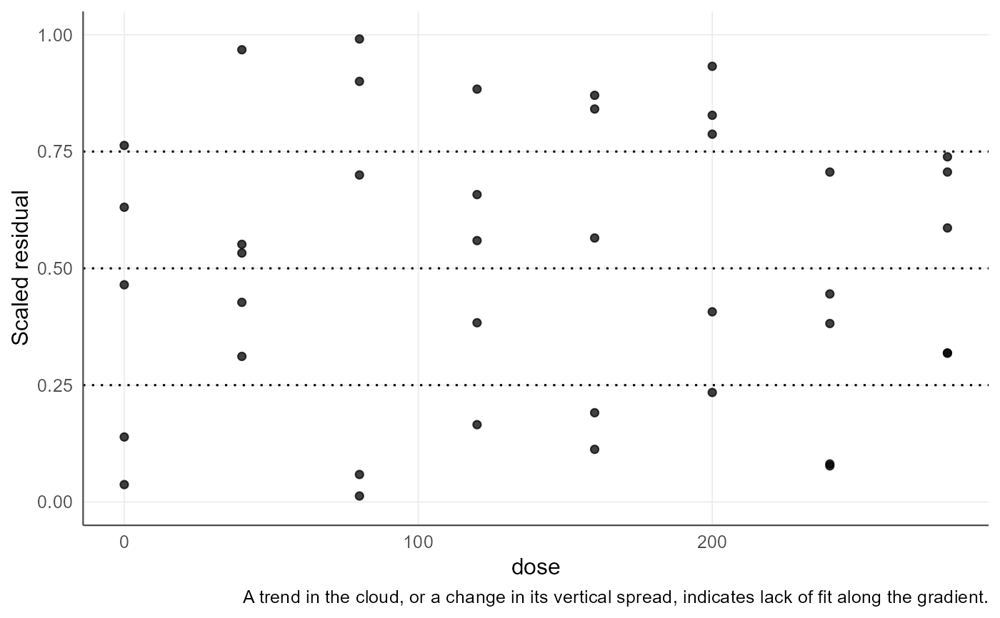

Simulation-based quantile residuals
agri_np_simdiag.RdScaled residuals obtained by locating each observation inside its own simulated predictive distribution. Under a correct model they are uniform on the unit interval, whatever the distribution of the response.
Arguments
- object
An
agri_np_reg_fit.- nsim
Number of simulations.
- seed
Random seed.
- engine
"auto"uses DHARMa when it is installed and understands the backend, otherwise the internal residual-resampling simulator."agriRank"forces the internal one.- x
An
agri_np_simdiagobject.- type
"uniform_qq"against the uniform reference, or"residual_predictor"against the gradient.- ...
Unused.
Details
A normal QQ-plot asks whether the residuals look Gaussian. For a package whose premise is to avoid assuming a distribution, that is the wrong question asked of the wrong quantity. Quantile residuals ask where each observation falls inside the predictive distribution the model implies, and uniformity of those positions is the property a correct model must have, regardless of the response distribution.
When DHARMa is installed and the backend is one it understands, its machinery is used. Otherwise agriRank simulates by resampling the fitted residuals, which keeps the diagnostic available for the smoothers DHARMa does not know, and keeps the reference distribution empirical rather than assumed.
The diagnostic is descriptive. A departure from uniformity indicates that the fitted mean, the dispersion, or both, do not describe the data. It is never a rule for selecting an inferential method.
Value
An object of class agri_np_simdiag with the scaled residuals, a uniformity test, and the values needed for the figures.
References
Dunn, P. K. and Smyth, G. K. (1996). Randomized quantile residuals. Journal of Computational and Graphical Statistics, 5(3), 236-244. doi:10.1080/10618600.1996.10474708
Hartig, F. DHARMa: Residual Diagnostics for Hierarchical (Multi-Level / Mixed) Regression Models. CRAN.
Examples
data(agri_dose)
f <- agri_np_regression(yield ~ dose, agri_dose, method = "smoothing_spline")
# Example 1: scaled residuals and their uniformity
sd1 <- agri_np_simdiag(f, nsim = 150, seed = 1)
sd1
#> agriRank simulation-based residual diagnostics
#> Engine: smoothing_spline Simulator: agriRank simulation, DHARMa scaling
#> Simulations: 150 n = 40
#> Scaled residual quartiles: 0.0128 0.2922 0.5421 0.7448 0.9909
#> Expected under a correct model: 0.00 0.25 0.50 0.75 1.00
#>
#> check
#> uniformity
#> location along the gradient
#> dispersion along the gradient
#> question statistic
#> Are the scaled residuals uniform overall? 0.06153
#> Is the fitted mean systematically off in some part of the range? 3.36293
#> Does the spread change along the gradient? 9.64098
#> p_value
#> 0.9958
#> 0.8495
#> 0.2098
#>
#> Descriptive. The overall uniformity check has little power against a mean
#> that is wrong in a systematic way; the location check along the gradient is
#> the one that detects it. Neither is a rule for choosing an inferential test.
# Example 2: the two figures
if (requireNamespace("ggplot2", quietly = TRUE)) {
plot(sd1, type = "uniform_qq")
plot(sd1, type = "residual_predictor")
}

# Example 3: a deliberately wrong shape. Forcing a monotone increase on a
# response that plateaus should leave a visible signature in the residuals.
f_wrong <- agri_np_regression(yield ~ dose, agri_dose, method = "isotonic",
shape = "increasing")
agri_np_simdiag(f_wrong, nsim = 150, seed = 1)$uniformity
#> statistic p_value test
#> 1 0.06016409 0.99689 Kolmogorov-Smirnov against uniform